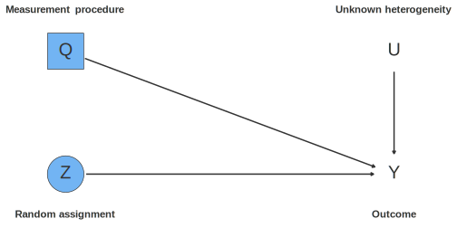
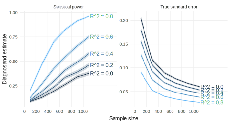
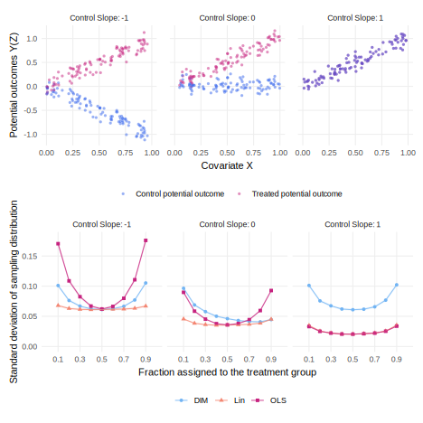

31 Two-arm randomized experiments
We declare a canonical two-arm trial, motivate key diagnosands for assessing the quality of the design, use diagnosis and redesign to explore the properties of two-arm trials, and discuss key risks to inference. This entry includes code for a “designer” which lets you quickly design and redesign two-arm trials.
All two-arm randomized trials have in common that subjects are randomly assigned to one of two conditions. Canonically, the two conditions include one treatment condition and one control condition. Some two-arm trials eschew the pure control condition in favor of a placebo control condition, or even a second treatment condition. The uniting feature of all these designs is that the model includes two and only two potential outcomes for each unit and that the data strategy randomly assigns which of these potential outcomes will be revealed by each unit.
A key choice in the design of two-arm trials is the random assignment procedure. Will we use simple random assignment (coin flip, or Bernoulli) or will we use complete random assignment? Will the randomization be blocked or clustered? Will we “restrict” the randomization so that only randomizations that generate acceptable levels of balance on pre-treatment characteristics are permitted? We will explore the implications of some of these choices in the coming sections, but for the moment, the main point is that saying “treatments were assigned at random” is insufficient. We need to describe the randomization procedure in detail in order to know how to analyze the resulting experiment. See Section 8.1.2 for a description of many different random assignment procedures.
In this chapter, we’ll consider a canonical two arm-trial design, with complete random assignment in a fixed population, which uses difference-in-means to estimate the average treatment effect. We’ll now unpack this shorthand into the components of M, I, D, and A.
The model specifies a fixed sample of \(N\) subjects. Here we aren’t imagining that we are first sampling from a larger population. We have in mind a fixed set of units among which we will conduct our experiment: we are conducting “finite sample inference.” Under the model, each unit is endowed with two latent potential outcomes: a treated potential outcome and an untreated potential outcome. The difference between them is the individual treatment effect. In the canonical design, we assume that potential outcomes are “stable,” in the sense that all \(N\) units’ potential outcomes are defined with respect to the same treatment and that units’ potential outcomes do not depend on the treatment status of other units. This assumption is often referred to as the “stable unit treatment value assumption,” or SUTVA (Rubin 1980).
Because the model specifies a fixed sample, the inquiries are also defined at the sample level. The most common inquiry for a two-arm trial is the sample average treatment effect, or SATE. It is equal to the average difference between the treated and untreated potential outcomes for the units in the sample: \(\E_{i\in N}[Y_i(1) - Y_i(0)]\). Two-arm trials can also support other inquiries like the SATE among a subgroup (called a conditional average treatment effect, or CATE), but we’ll leave those inquiries to the side for the moment.
The data strategy uses complete random assignment in which exactly \(m\) of \(N\) units are assigned to treatment (\(Z_i = 1\)) and the remainder are assigned to control (\(Z_i = 0\)). We measure observed outcomes in such a way that we measure the treated potential outcome in the treatment group and untreated potential outcomes in the control group: \(Y_i = Y_i(1) \times Z_i + Y_i(0)\times(1 - Z_i)\). This expression is sometimes called the “switching equation” because of the way it “switches” which potential outcome is revealed by the treatment assignment. It also embeds the crucial assumption that units reveal the potential outcome they are assigned to reveal. If the experiment encounters noncompliance, this assumption is violated. It’s also violated if “excludability” is violated, i.e., if something other than treatment moves with assignment to treatment. For example, if the treatment group is measured differently from the control group, excludability would be violated.
The answer strategy is the difference-in-means estimator with so-called Neyman standard errors. In mathematical notation, if units are ordered with treated units first and control units after, we can wrote both as:
\[\begin{align} \widehat{DIM} &= \frac{\sum_1^mY_i}{m} - \frac{\sum_{m + 1}^NY_i}{N-m} \\ \widehat{\mathrm{se}(DIM)} &= \sqrt{\frac{\widehat{Var}(Y_i(1))}{m} + \frac{\widehat{Var}(Y_i(0))}{N-m}}\\ \end{align}\]
The estimated standard error can be used as an input for two other statistical procedures: null hypothesis significance testing via a \(t\)-test and the construction of a 95% confidence interval.
The DAG corresponding to a two-arm randomized trial is very simple. An outcome \(Y\) is affected by unknown factors \(U\) and a treatment \(Z\). The measurement procedure \(Q\) affects \(Y\) in the sense that it measures a latent \(Y\) and records the measurement in a dataset. No arrows lead into \(Z\) because it is randomly assigned. No arrow leads from \(Z\) to \(Q\), because we assume no excludability violations wherein the treatment changes how units are measured. This simple DAG confirms that the average causal effect of \(Z\) on \(Y\) is nonparametrically identified because no back-door paths lead from \(Z\) to \(Y\).

Declaration 31.1 Canonical two arm trial design
Diagnosis 31.1 Two arm trial diagnosis
Diagnosing this two arm trial design, we see that as expected, we encountered no bias, but high variance. In the model, we set the ATE at 0.2 standard units, but the true standard deviation of the estimator (the true standard error) is nearly the same value, at 0.19 standard units. We have low statistical power, at 16%. Two approaches to increasing the precision of the estimate include increasing the sample size and including prognostic pre-treatment covariates in the answer strategy. We explore both of these approaches in the next section.
diagnosis_18.1 <- diagnose_design(declaration_18.1)| Bias | Power | SD Estimate |
|---|---|---|
| -0.01 | 0.17 | 0.20 |
| (0.00) | (0.01) | (0.00) |
31.1 Using covariates to increase precision
When treatments are randomized, whether we adjust for pre-treatment covariates makes little difference for bias. By contrast, when treatments are not randomized, we often do need on adjust for covariates in order to account for the confounding introduced by “omitted variables” (see Chapter 21).
The purpose of adjusting for covariates in an experimental study is to increase precision. The more predictive the covariates are of the outcome, the more they help the precision of the estimates.
One way to think about how much the inclusion of covariates will help precision is to summarize their predictive power in a statistic like \(R^2\). The \(R^2\) value from a regression of the outcome on the covariates alone (i.e., without the treatment indicator) gives an understanding of how jointly predictive the covariates are. If \(R^2\) is close to zero, including the covariates will make almost no difference for precision. If \(R^2\) is close to one, we can achieve dramatic increases in precision and statistical power.
Declaration 31.2 draws a summary covariate X and unobserved heterogeneity U from a multivariate normal distribution with a specified covariance between the two variables. By redesigning over the values of that correlation, we can learn how covariate adjustment affects precision depending on the level of \(R^2\). The answer strategy uses the estimator proposed in Lin (2013) for reasons explained in the next section.
Declaration 31.2 Two arm trial with covariate adjustment
N <- 100
r_sq <- 0
declaration_18.2 <-
declare_model(N = N,
draw_multivariate(c(U, X) ~ MASS::mvrnorm(
n = N,
mu = c(0, 0),
Sigma = matrix(c(1, sqrt(r_sq), sqrt(r_sq), 1), 2, 2)
)),
potential_outcomes(Y ~ 0.1 * Z + U)) +
declare_inquiry(ATE = mean(Y_Z_1 - Y_Z_0)) +
declare_assignment(Z = complete_ra(N)) +
declare_measurement(Y = reveal_outcomes(Y ~ Z)) +
declare_estimator(
Y ~ Z, covariates = ~X, .method = lm_lin, inquiry = "ATE"
)Diagnosis 31.2 Two arm trial diagnosis
diagnosis_18.2 <-
declaration_18.2 |>
redesign(r_sq = seq(0.0, 0.9, by = 0.2)) |>
diagnose_designs() Figure 31.2 plots sample size on the horizontal axis and diagnosand estimates on the vertical axis. In the left hand panel, we see that, as usual, statistical power increases with sample size. Different values of \(R^2\) are distinguished by colored lines. Higher values of \(R^2\) lead to higher statistical power. The gains can be dramatic. The no-adjustment benchmark is represented by the \(R^2 = 0\) line. We achieve approximately the same statistical power as a 1,000 unit experiment with no adjustment when we the pre-treatment covariates yield an \(R^2\) of 0.8 and we have just 200 units. The right panel tells a similar story, though it emphasizes that the marginal benefits of covariate adjustment get smaller as the sample size gets bigger. In any real experimental scenario, designers should take care to generate informed guesses about the probable \(R^2\) of the covariates and then explore the tradeoffs between pre-treatment data collection and additional sample size.

31.2 Can controlling for covariates hurt precision?
Freedman (2008) critiques the practice of using OLS regression to adjust experimental data. While the difference-in-means estimator is unbiased for the average treatment effect, the covariate-adjusted OLS estimator exhibits a small sample bias (sometimes called “Freedman bias”) that diminishes quickly as sample sizes increase. More worrying is the critique that covariate adjustment can even hurt precision.
Lin (2013) unpacks the circumstances under which this precision loss occurs and offers an alternative estimator that is guaranteed to be at least as precise as the unadjusted estimator. The trouble occurs when the correlation of covariates with the outcome is quite different in the treatment condition from in the control condition and when designs are strongly imbalanced in the sense of having large proportions of treated or untreated units. We refer the reader to this excellent paper for details and the connection between covariate adjustment in randomized experiments and covariate adjustment in random sampling designs. In sum, the Lin estimator deals with the problem by performing covariate adjustment in each arm of the experiment separately, which is equivalent to the inclusion of a full set of treatment-by-covariate interactions. In a clever bit of regression magic, Lin shows how first pre-processing the data by de-meaning the covariates renders the coefficient on the treatment regressor an estimate of the overall ATE. The lm_lin estimator in the estimatr package implements this pre-processing in one step.
Declaration 31.3 will help us to explore the precision of three estimators under a variety of circumstances. We want to understand the performance of the difference-in-means, OLS, and Lin estimators depending on how different the correlation between X and the outcome is by treatment arm, and depending on the fraction of units assigned to treatment.
Declaration 31.3 Lin estimator design
prob = 0.5
control_slope = -1
declaration_18.3 <-
declare_model(N = 100,
X = runif(N, 0, 1),
U = rnorm(N, sd = 0.1),
Y_Z_1 = 1*X + U,
Y_Z_0 = control_slope*X + U
) +
declare_inquiry(ATE = mean(Y_Z_1 - Y_Z_0)) +
declare_assignment(Z = complete_ra(N = N, prob = prob)) +
declare_measurement(Y = reveal_outcomes(Y ~ Z)) +
declare_estimator(Y ~ Z, inquiry = "ATE", label = "DIM") +
declare_estimator(Y ~ Z + X, .method = lm_robust, inquiry = "ATE", label = "OLS") +
declare_estimator(Y ~ Z, covariates = ~X, .method = lm_lin, inquiry = "ATE", label = "Lin")Diagnosis 31.3 Lin estimator diagnosis
Figure 31.3 considers a range of designs under three possible models. The three models are described by the top row of facets. In all cases, the slope of the treated potential outcomes with respect to \(X\) is set to 1. All the way to the left, the slope with respect to the control potential outcomes is set to -1, and all the way to the right, is set to +1. The bottom row of facets shows the performance of three estimators along a range of treatment assignment probabilities.
When the control slope is -1, we can see Freedman’s precision critique. The standard error of the OLS is larger than difference-in-means for many designs, though they coincide when the fraction treated is 50%. This problem persists in some form until the slope of the control potential outcome with respect to \(X\) gets close enough to the slope of the treated potential outcomes with respect to \(X\).
All along this range, however, the Lin estimator dominates OLS and difference-in-means. Regardless of the fraction assigned to treatment and the model of potential outcomes, the Lin estimator achieves equal or better precision than either difference-in-means or OLS.

31.3 Examples
Peyton, Sierra-Arévalo, and Rand (2019) conduct a two-arm randomized experiment in which treatment households were assigned to receive a nonenforcement visit from police and control households were not. Outcomes were measured via follow-up survey.
Balcells, Palanza, and Voytas (2022) use a two-arm randomized experiment to study the effects of a visit to a transitional justice museum in Chile on support for democratic institutions.